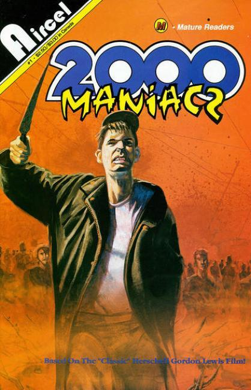
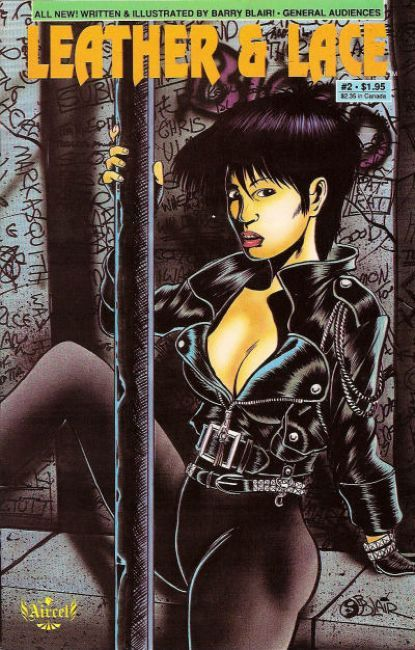
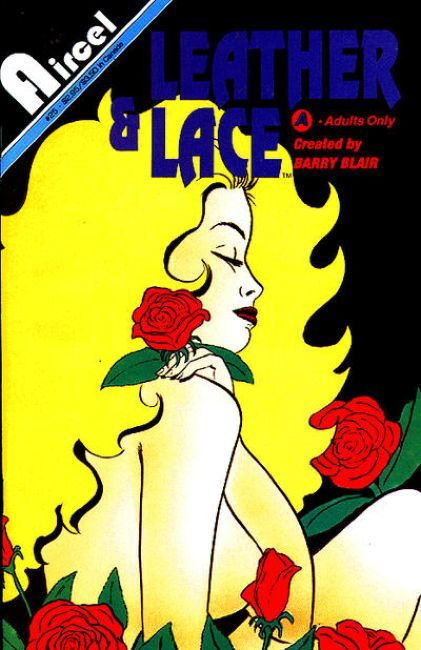
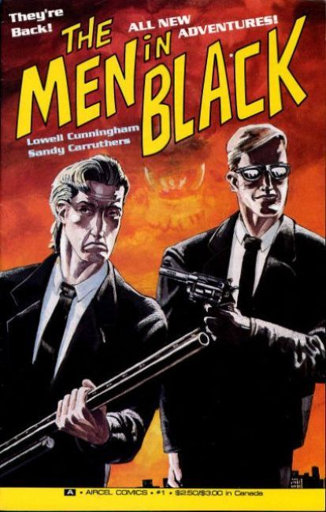
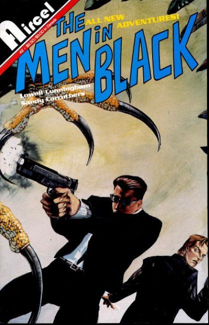
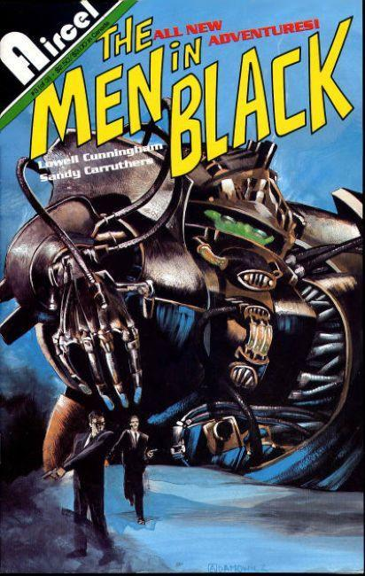
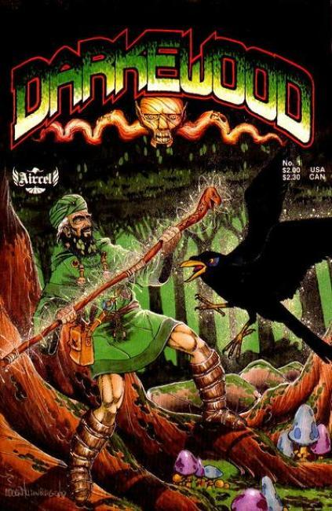
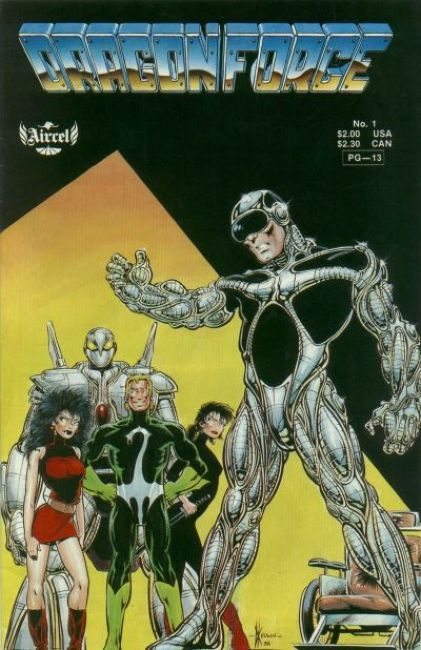

×







❮
❯
Aircel Comics (Aircel Publishing) was a Canadian comic book publisher founded by Barry Blair, based in Ottawa and active from 1985 until 1994. In 1988, it merged with American publisher Eternity Comics, itself an imprint of Malibu Comics, and in the late 1980s was taken over by Malibu before ceasing publication. It was the original publisher of The Men in Black, the 1990 comic book on which the Men In Black film series was based.
Aircel blended historical and futuristic fantasy from different cultures as the underlying theme for each comic series. It featured high-quality colour covers with black-and white interiors. Canadian artists such as Dave Cooper, Denis Beauvais, and Dale Keown got their start at Aircel. Charles de Lint also scripted several comic books for Aircel in the mid-1980s.
Titles
2000 Maniacs (1991)
Adventurers (1986)
Arthur Sex (1991)
Bad Girls Go to Hell (1992)
Bloodlines (1987)
Bodyguard (1990)
Born to Kill (1991)
Casanova (1991)
Casanova in Venice (1992)
Cat & Mouse (1990)
Cathy (1991)
China Sea (1989)
Cyberlust (1991)
Darkewood (1987)
Debbie Does Comics (1992)
Debbie Does Dallas (1991)
Debbie Does Dallas in 3-D (1992)
Dragonforce (1988)
Dragonring (1986)
Dragonring (1986)
Elflord (1986)
Elflord (1986)
Elflord (1987)
Erotic Tales (1991)
Experience (1991)
Final Taboo (1991)
Flesh Gordon (1992)
Full Throttle (1991)
Galaxina (1991)
Greenhaven (1988)
Greenlock (1991)
Hardball (1991)
Hardkorr (1991)
Hooters (1992)
Icarus (1987)
Jake Thrash (1988)
Jungle Love (1991)
King Arthur Uncensored (1992)
Leather & Lace (1989)
Leather & Lace Book II: Blood Sex & Tears (1991)
Lizard Lady (1991)
Maelstrom (1987)
Mara (1991)
Men In Black Book II (1991)
Mutant Zone (1991)
Nocturne (1991)
Pendragon (1991)
Samurai (1985)
Samurai Compilation (1987)
Samurai: The Splinter and the Sword (1988)
Scimidar Book VI: Slashdance (1992)
Scream Play (1993)
Scum of the Earth (1991)
Shadowalker (1988)
She-Devils on Wheels (1992)
Stark: Future (1986)
Starstone (1987)
Tale of Mya Rom (1988)
The Cat (1991)
Torment (1991)
Triple-XXX (1992)
Underground (1987)
Vampyre’s Kiss Book III: The Dark Kiss of Night (1991)
Voyeur (1991)
Warlock 5 (1986)
Warlock 5 Book One (1988)
Warlocks (1988)
Warlocks: The Special Edition (1989)